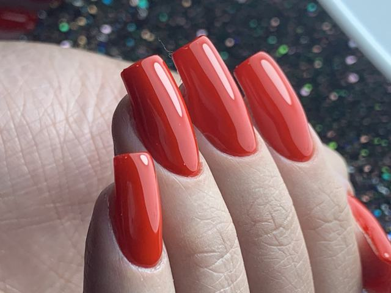
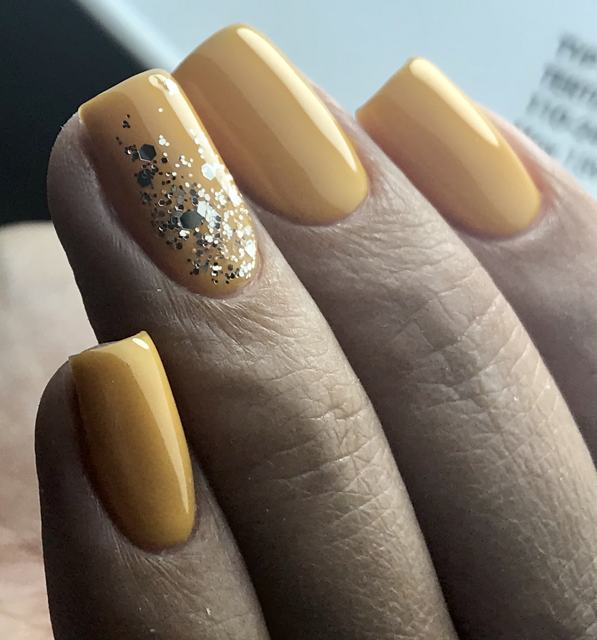
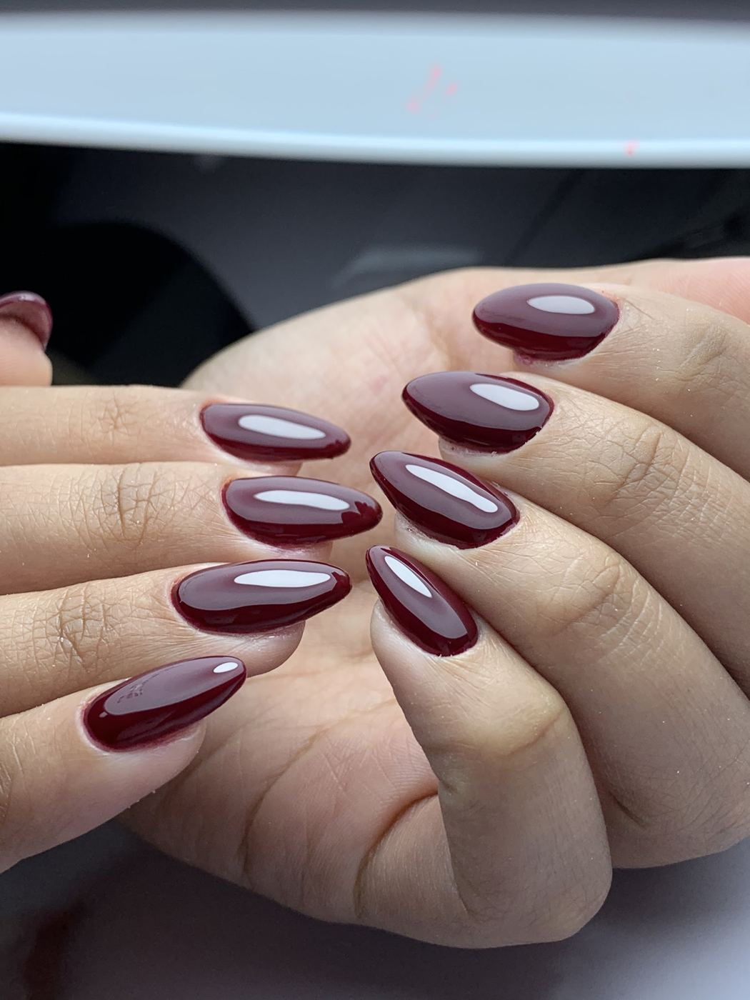
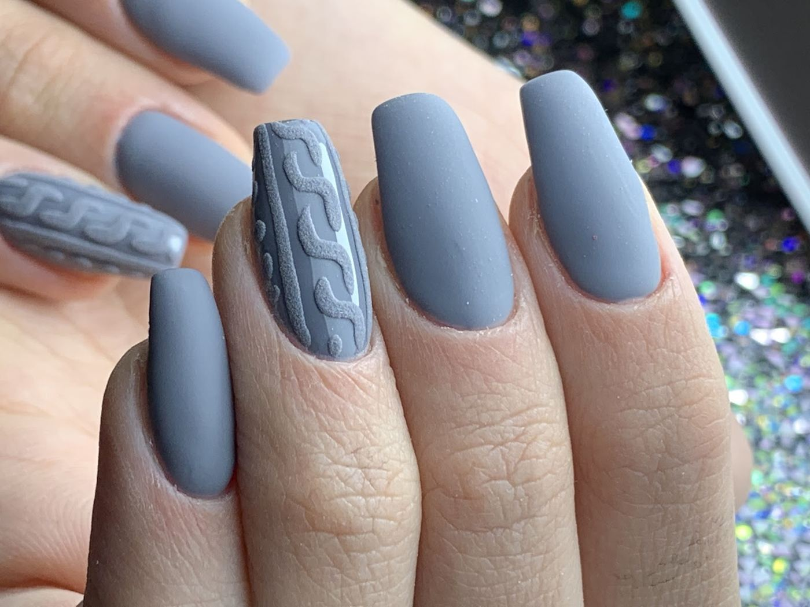
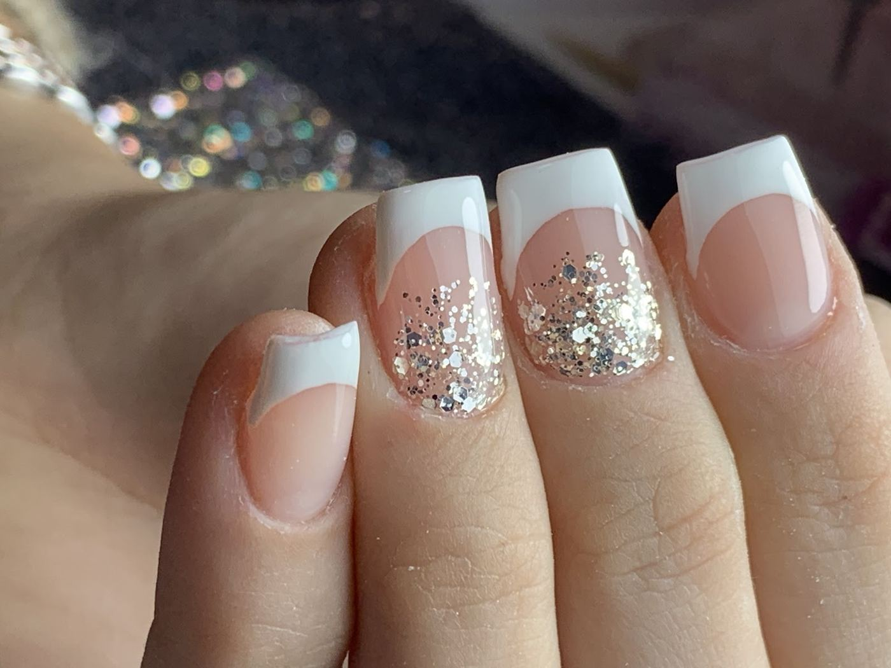
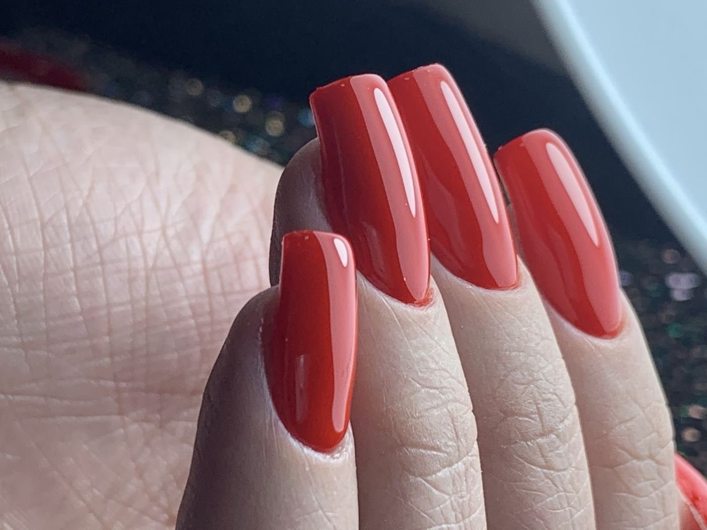

אלמוג 4, טירת כרמל4 Almog St, Tirat Carmel
לירז ליבוביץ'Liraz Leibovich
ציפורניים שתופסות אורNails that catch the light
Liraz Leibovich Nails – בניית ציפורניים, מניקור ופדיקור ברחוב אלמוג בטירת כרמל.Liraz Leibovich Nails: nail building, manicure and pedicure on Almog Street, Tirat Carmel.


שכבה אחרי שכבהLayer by layer
כמו פנינה, הברק נבנה בשכבות דקות.Like a pearl, the shine is built in thin layers.

העבודות מקרובThe work, up close
צילומים מהעמוד של לירז בגוגל.Photos from Liraz’s Google page.

בנייהBuilding
מניקורManicure
פדיקורPedicure

"הבנייה מחזיקה זמן רב."“The build lasts a long time.”
אושרת זנבה, בגוגלOsheret Zanba, on Google · translated from Hebrew

מה כותבות עליהWhat clients write
מניקוריסטית ברמה הכי גבוהה שיש! עבודה מדויקת, נקייה ומקצועית בטירוף. השירות אדיב, האווירה נעימה והתוצאה תמיד מושלמת. ממליצה בחום לכל מי שמחפשת איכות בלי פשרות
A manicurist of the highest level there is! Precise, clean and incredibly professional work. Kind service, a pleasant atmosphere and the result is always perfect. I warmly recommend her to anyone looking for quality without compromise.
לירז מקצועית, מדויקת ואסתטית, הבנייה מחזיקה זמן רב.
היחס נעים, סבלני ומאפשר חוויה רגועה ונוחה לכל אורך הטיפול.
ממליצה בחום לכל מי שמחפשת איכות גבוהה ושירות מצוין.Liraz is professional, precise and aesthetic; the build lasts a long time. The treatment is pleasant and patient, and makes for a calm, comfortable experience all the way through. Warmly recommended to anyone looking for high quality and excellent service.
אין ולא תיהיה בונה ציפורנים מוקצעות כמו לירז
יחס אישי שאין כמותו
עבודה הכי נקייה ויפה שיכולה להיות
בלי קשר לעבודה יש פה אישה מדהימה !
אימלה איזה כיף שזכיתי להיות לקוחה שלה !!There isn’t and never will be a nail builder as professional as Liraz. Personal attention like no other. The cleanest, most beautiful work there can be. And apart from the work, she’s an amazing woman! I’m so lucky to be her client!!
אצלה כבר שנים ולא מחליפה! מקצועית, מדויקת והתוצאות תמיד מושלמות. ממליצה מכל הלב.
I’ve been going to her for years and I’m not switching! Professional, precise, and the results are always perfect. I recommend her with all my heart.
הודעה ללירזA note to Liraz
בוחרים, וההודעה נכתבת מעצמה.Pick, and the message writes itself.